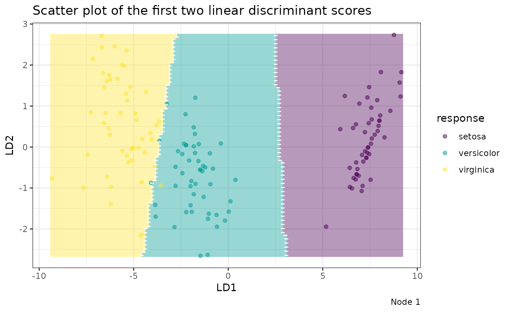

Classification Trees with Uncorrelated Linear Discriminant Analysis Terminal Nodes
Source:R/Treee.R
Treee.RdThis function fits a classification tree where each node has a Uncorrelated Linear Discriminant Analysis (ULDA) model. It can also handle missing values and perform downsampling. The resulting tree can be pruned either through pre-pruning or post-pruning methods.
Usage
Treee(
datX,
response,
ldaType = c("forward", "all"),
nodeModel = c("ULDA", "mode"),
pruneMethod = c("pre", "post"),
numberOfPruning = 10L,
maxTreeLevel = 20L,
minNodeSize = NULL,
pThreshold = NULL,
prior = NULL,
misClassCost = NULL,
missingMethod = c("medianFlag", "newLevel"),
kSample = -1,
verbose = TRUE
)Arguments
- datX
A data frame of predictor variables.
- response
A vector of response values corresponding to
datX.- ldaType
A character string specifying the type of LDA to use. Options are
"forward"for forward ULDA or"all"for full ULDA. Default is"forward".- nodeModel
A character string specifying the type of model used in each node. Options are
"ULDA"for Uncorrelated LDA, or"mode"for predicting based on the most frequent class. Default is"ULDA".- pruneMethod
A character string specifying the pruning method.
"pre"performs pre-pruning based on p-value thresholds, and"post"performs cross-validation-based post-pruning. Default is"pre".- numberOfPruning
An integer specifying the number of folds for cross-validation during post-pruning. Default is
10.- maxTreeLevel
An integer controlling the maximum depth of the tree. Increasing this value allows for deeper trees with more nodes. Default is
20.- minNodeSize
An integer controlling the minimum number of samples required in a node. Setting a higher value may lead to earlier stopping and smaller trees. If not specified, it defaults to one plus the number of response classes.
- pThreshold
A numeric value used as a threshold for pre-pruning based on p-values. Lower values result in more conservative trees. If not specified, defaults to
0.01for pre-pruning and0.6for post-pruning.- prior
A numeric vector of prior probabilities for each class. If
NULL, the prior is automatically calculated from the data.- misClassCost
A square matrix \(C\), where each element \(C_{ij}\) represents the cost of classifying an observation into class \(i\) given that it truly belongs to class \(j\). If
NULL, a default matrix with equal misclassification costs for all class pairs is used. Default isNULL.- missingMethod
A character string specifying how missing values should be handled. Options include
'mean','median','meanFlag','medianFlag'for numerical variables, and'mode','modeFlag','newLevel'for factor variables.'Flag'options indicate whether a missing flag is added, while'newLevel'replaces missing values with a new factor level.- kSample
An integer specifying the number of samples to use for downsampling during tree construction. Set to
-1to disable downsampling.- verbose
A logical value. If
TRUE, progress messages and detailed output are printed during tree construction and pruning. Default isFALSE.
Value
An object of class Treee containing the fitted tree, which is a
list of nodes, each an object of class TreeeNode. Each TreeeNode
contains:
currentIndex: The node index in the tree.currentLevel: The depth of the current node in the tree.idxRow,idxCol: Row and column indices indicating which part of the original data was used for this node.currentLoss: The training error for this node.accuracy: The training accuracy for this node.stopInfo: Information on why the node stopped growing.proportions: The observed frequency of each class in this node.prior: The (adjusted) class prior probabilities used for ULDA or mode prediction.misClassCost: The misclassification cost matrix used in this node.parent: The index of the parent node.children: A vector of indices of this node’s direct children.splitFun: The splitting function used for this node.nodeModel: Indicates the model fitted at the node ('ULDA'or'mode').nodePredict: The fitted model at the node, either a ULDA object or the plurality class.alpha: The p-value from a two-sample t-test used to evaluate the strength of the split.childrenTerminal: A vector of indices representing the terminal nodes that are descendants of this node.childrenTerminalLoss: The total training error accumulated from all nodes listed inchildrenTerminal.
References
Wang, S. (2024). FoLDTree: A ULDA-Based Decision Tree Framework for Efficient Oblique Splits and Feature Selection. arXiv preprint arXiv:2410.23147. Available at https://arxiv.org/abs/2410.23147.
Wang, S. (2024). A New Forward Discriminant Analysis Framework Based On Pillai's Trace and ULDA. arXiv preprint arXiv:2409.03136. Available at https://arxiv.org/abs/2409.03136.
Examples
fit <- Treee(datX = iris[, -5], response = iris[, 5], verbose = FALSE)
# Use cross-validation to prune the tree
fitCV <- Treee(datX = iris[, -5], response = iris[, 5], pruneMethod = "post", verbose = FALSE)
head(predict(fit, iris)) # prediction
#> [1] "setosa" "setosa" "setosa" "setosa" "setosa" "setosa"
plot(fit) # plot the overall tree
plot(fit, datX = iris[, -5], response = iris[, 5], node = 1) # plot a certain node
